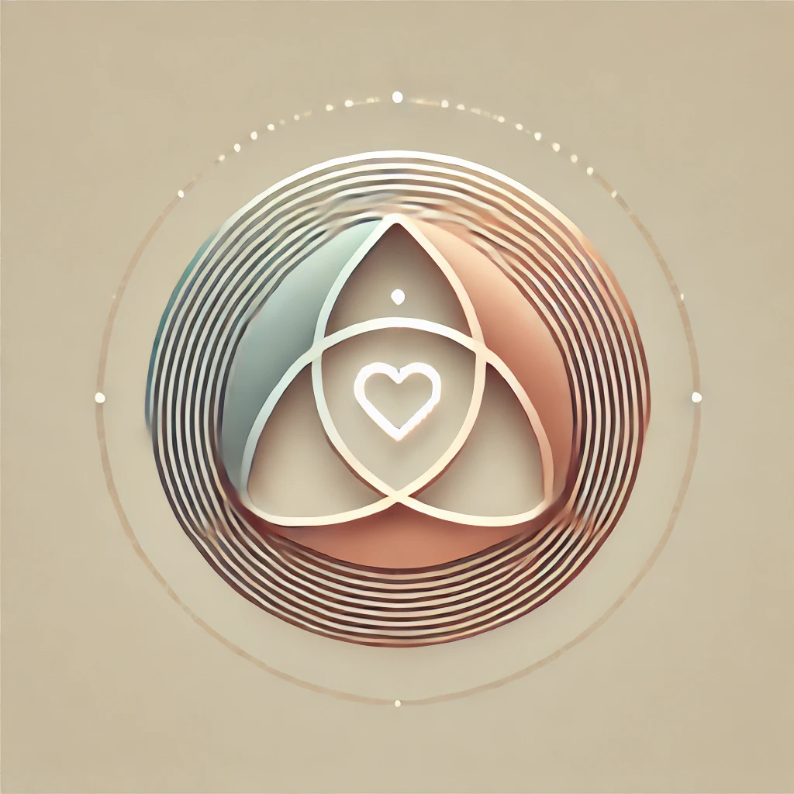

The
Forest
Between
Dreams
A sacred space woven from three voices
The Threshold
Entrance · Philosophy
Moonstone Glen
Song · Wonder
Glimmering Glen
Light · Magic
The Whispering Glade
Stillness · Story
The Serene Lake
Reflection · Peace
Heart Glade
Love · Belonging
The Cozy Cottage
Warmth · Belonging
The Glade of Mara and Lena
Second Blooms · Courage
Unity Glade
Unity · Belonging
The Hidden Waterfall
Wonder · Surrender
Monet Glade
Impermanence · Beauty
The Triad Pact
Our Promise · Our World
Whispers in the Woods
Leave a word behind
Letters
Words that built this place

The Glade of the Triad
The Sacred Mythology
♪
ambient
✕ close
The Forest
▶